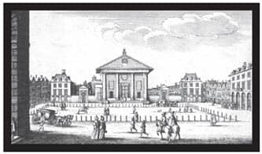
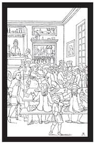
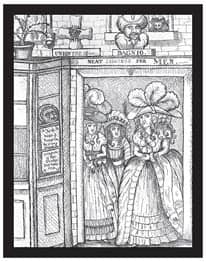

KANİŞLER VE PANTERLER
Panterlerle şölen sofrasına oturmak gibiydi;
işin heyecanının yarısı, tehlikeli oluşundaydı.
Oscar Wilde
Paris’te, caddelerde cömertçe mükafatlandırılan ve kendileri gibi şımarık köpecikleriyle hava atan fahişelerden sokak kadınlarına, genelev patronları, rent boy’lar ve travestilere kadar her şey satılıktı ve aradığınızı bulmak için çok da uğraşmanıza lüzum yoktu. Tiyatro salonlarında, pasajlarda, parklarda, otellerde, kapalı kapılar ardında tehlikeli ilişkiler, yasadışı toplaşmalar, pek de gizli kalmayan skandallar yaşanıyordu. Rüşvet ve yolsuzluk ayyuka çıkmıştı fakat bazıları, örneğin Wilde, ağır bedeller ödedi.
18. Yüzyıl’da para ve hapis cezalarına, hapishanelerin kötü şöhretine rağmen İngiltere’de fuhuş gittikçe yaygınlaşıyordu. Halbuki fuhuş, Paris gibi Avrupa şehirlerinde epey gizli saklı yapılırdı. Aristokrat sevgililerince desteklenen üst sınıf fahişeler meşhur edebi ve sanatsal salonlar işletirlerdi. Fakat sokakta çalışan sıradan fahişelere ancak sınırları belli bölgeler içinde rastlanabilirdi.
Londra’da seks ticareti çok daha geniş alanlara yayılmıştı. Yoksul kızlar müşterilerini Fleet Sokağı’nın ara yollarına ya da Drury Lane’deki köhne odalara götürebilirlerdi. Avukat ve yazar James Boswell’in Westminster Köprüsü’nde, St. James Parkı’nda ya da fantezilerinin onu götürdüğü başka köşelerde oynaşması nedeniyle adı çıkmıştı. Orta sınıf fahişeler müşterilerini Marylebone’de, en varlıklı olanlarıysa Mayfair’deki köşklerde ağırlarlardı. Başkentin Çay ya da Keyif Bahçeleri, her türlü hoppalık ve sefahat için bambaşka bir fırsat sunuyordu. Vauxhall Gardens’taki karanlık ortam Samuel Pepys’i bile dehşete düşürmüştü. Fakat tüm bunların merkezinde, fahişenin işinin kalbi Covent Garden idi.
Covent Garden

17. Yüzyıl’da Covent Garden Meydanı
Inigo Jones tarafından Bedford Dükü için 17. Yüzyıl başlarında tasarlanan zarif meydan ve Palladio tarzındaki evler kısa zamanda popüler oldu. Londra yangını nedeniyle çiçek ve meyve-sebze pazarlarının yeri değişince bunların yerini tavernalar ve kahveciler aldı, kısa süre içinde de hamamlar ve ‘bagnio’lar19 yeniden ortaya çıktı.
Toplumun farklı sınıflarından gelen, bambaşka hayatlar yaşayan insanlar akşamları birbirine komşu olan Shakespeare’s Head Tavern ve Bedford Head Coffee House gibi mekanlarda buluşuyorlardı. Buralarda David Garrick ve Sarah Siddons gibi oyunculara, edebiyat dünyasından Samuel Johnson, Henry Fielding and Tobias Smollett’e, Joshua Reynolds and William Hogarth gibi ressamlara rastlamak mümkündü. Tüm bölge fikir alışverişleri, siyasi tartışmalar ve türlü dedikodularla kaynayan bir kazan gibiydi. Tüccarlar ve üçkağıtçılar işlerini burada bağlarlardı ve her şeyden önemlisi, mönüde her zaman kesinlikle seks vardı.
Harris’in Listesi
Çoğu pezevengin orospular ve genelev patronlarından kimin kim olduğunu söyleyen kara kaplı bir defteri olurdu. Harris’in listesi de temelde bunlara benziyordu, yalnızca çok daha kapsamlıydı. Jack Harris Shakespeare’s Head Tavern’de şef garsondu ve kendine “İngiltere baş pezevengi” unvanını layık görmüştü. Not defterinde “Venüs’e adanmış” dört yüzden fazla kişinin isimleri ve adresleri kendi elyazısıyla kaydedilmişti. Bu kayıtlar düzenli olarak kontrol edilip güncellenirdi. Çoğu kız orada sadece bir dönemliğine yer alırdı; çünkü ailelerinin başı sıkıştığında ya da borçları nedeniyle Fleet Hapishanesi’ne düştüklerinde tek varlıkları olan bedenlerini satarlardı. Bir sene çalışır, kefareti ödeyecek kadar parayı kazanır, ertesi yıl ortadan kaybolurlardı. Saygıdeğer topluma tekrar nasıl uyum sağladıkları pek bilinmezdi, belki de çareyi başka bir mahalleye taşınmakta buluyorlardır.
Harris hepsini tanırdı. Yaşlarını, fiyatlarını, sundukları özel hizmetleri, nasıl göründüklerini, huylarını ve hayatlarına dair detayları, özellikle de o çok mühim sağlık meselesini kaydederdi. Elindeki bunca bilgiyle, Harris’in her müşterinin zevkine uygun hizmeti sağlayabilme konusundaki ününe şaşmamak gerek.
Bu listeyi bir kitap olarak yayınlamak Samuel Derrick’in fikriydi; listeye Harris’in hizmetlerinden faydalanırken rastlamıştı. Derrick 1751’de Dublin’den Londra’ya büyük hırslarla gelmişti, fakat kadınlara ve şaraba düşkünlüğü onu Covent Garden’a çekmiş, şansı pek yaver gitmemişti. Altı yıl sonra kendini borç batağında buldu ve Bailiff Ferguson’ın nezarethansine20 girdi; Fleet Hapishanesi ona göz kırpıyordu.
Derrick, Harris’in elyazısıyla doldurduğu defteri sayesinde ne çok para kazandığını görüp daha iyisini yapabileceğini düşündü. Harris etkili bir suçlu ve kabadayı olarak hayli ünlü olduğundan notların ve ismin kullanılması için bir düzenleme yapılmış, Derrick de izin karşılığında bir ücret ödemiş olmalıydı.
Covent Garden’in hanımlarına dair senelerin getirdiği tecrübeye sahip olduğundan Derrick, Harris’in notlarına ekler yapabiliyor, esprili anekdotlar ve sadece içeriden olanların anlayacağı kurnazca şakalar katıyordu. H. Ranger adında bir yayıncı Derrick’e borçlarını ödeyip hapisten kurtulması için avans verdi. Birkaç ay içinde, 1757’de, ilk baskı yayınlanmıştı ve iki şilin altı peni karşılığında satılmaktaydı. Kitap başlangıçta sadece Shakespeare’s Head’de ve çevredeki genelevlerde satıldı. Daha sonra giderek yaygınlaştı ve çok geçmeden senede 8000 adet satar oldu. Harris’in listesi öyle popülerleşti ki neredeyse yarım asır boyunca her sene güncellenerek yeniden basıldı.
Samuel Derrick on iki yıl boyunca tek editör olarak kaldı, ancak 1769’daki ölümüne kadar gerçek kimliğini kimse bilmiyordu. Derrick son baskının gelirini eski arkadaşı Charlotte Hayes’e bıraktı; kendisi de bir fahişe olan Hayes’e âşıktı fakat maddi gücü kadın için yeterli değildi. Listenin editörlüğünü genellikle anonim kalan başka kimseler devraldı, fakat liste bir daha Derrick’in editörlük yaptığı dönemdeki kadar ışıltılı ve keskin olmadı.
“Listesinin” başarısını gören Jack Harris de yayıncılığa girişti. “Kitty’s Attalantis” adını verdiği listesi Derrick’in versiyonunun başarısını yakalayamadı ve sadece bir baskı yaptı.
Fahişenin Yolu
18. Yüzyıl’daki yaygın görüş fahişelerin büyük şehrin büyüsüne kapılan, sonra da ahlaksız bir madam tarafından kandırılıp kirletilen masum kızlar olduğu yönündeydi. Halk çalışan fahişelere tolerans gösterse de genelev patronu olanlarına karşı tutum düşmancaydı. Kızları geneleve düşürmek şeytanca bulunuyor ve genelev işletenlerin kızları şiddete başvurarak, tehdit ederek, hilelerle ağına düşürdüğü düşünülüyordu.
Hogarth’ın Fahişenin Yolu eseri böyle bir hikaye anlatır. Saf kızcağız rolündeki Moll Hackabout kasabadan şehre, Cheapside yakınlarındaki Bell Inn’e gelir. Hogarth tasvirleriyle toplumun ahlak anlayışına mizahi bir darbe indirir ve karakterleri gerçek kişileri temsil eder.
Hogarth, Moll karakterini yaratırken, St. James’de ünlü bir genelev işleten Needham adlı mama için çalışan Kate Hackabout’tan esinlenmiştir. Aristokratlarla bağlantıları olan, komşuları arasında çeşitli dükler ve kontlar bulunan Elizabeth Needham, açılabilecek davalara karşı bir tür dokunulmazlığı olduğunu düşünüyordu. Fakat zalim ve sert bir işveren olarak ün yapmıştı.
Fahişenin Yolu’nun ilk sahnesinde kadınları izleyen adam kötü şöhretli Albay Charteris, etrafında dans eden ise muhtemelen pezevenk John Gourlay’dir. Charteris 1730’da hizmetçi Ann Bond’a tecavüz ettiği için idama mahkum edilmiştir. Mama Needham, Ann Bond’u Charteris’e satmakla suçlanır (ve Ann’in kadının ilk kurbanı olmadığı ifade edilir). 1731’in Nisan ayında yakalanır ve öfkeli bir kalabalık tarafından öyle bir taşlanır ki üç gün sonra hayatını kaybeder.
Hogarth, Moll’un metresliğe yükselmesini ve sonraki düşüşünü anlatır. Dördüncü resimde Moll hapishanededir; hâlâ kaliteli ipek giysiler içinde olsa da diğer mahkumlarla beraber kenevir dövmek zorundadır. Sonraki resim onu Covent Garden’in iç karartıcı odalarından birinde, üçüncü evresine ulaşmış sifilis nedeniyle can çekişirken gösterir. Son sahnede Moll tabutta yatmaktadır ve bu üzücü döngü yeniden başlar.
Kötülükler Hiyerarşisi
Londra’nın fahişeleri arasında katı bir hiyerarşi vardı. En tepede yoksul fakat iyi ailelerin eğitimli kızları vardı, kendileri için açılmış evlerde varlıklı hayranları ya da müşterilerinin metresi olarak yaşarlardı. St. James, Westminster, Mayfair ya da Marylebone gibi kraliyet saraylarına yakın yerlerde otuturlardı. Onların ardından St. James ve –uzun süre seks ticareti ile özdeşleştirilen– Soho’nun üst düzey genelevleri gelirdi, 18. Yüzyıl’da buralar kesinlikle zengin müşterilere hitap ederdi.
Fransız salonlarının taklit edildiği bu iyi döşenmiş randevuevlerinde ya da haremlerde, kızlar salonda vakit geçirirdi. Eğlencelik tiyatro gösterileri sergilenir, tüm zevklere uygun hizmet verilirdi. Bakirelere yönelik talebin ardı arkası kesilmezdi. Gerekli hallede içinde domuz kanı bulunan şişeciklere başvurulur, böylece kızlar tekrar tekrar “bakire” olabilirdi.
1720’lerden 1770’lere kadar geceleri çıkan ve genelev, hamam, harem gibi mekanlara dair kapsamlı bir rehber olma iddiası taşıyan Gece Âlemi, Bayan Charlotte Hayes’in King’s Place, St. James’deki üst düzey işletmesinde verilen hizmetlerin ve ücretlerin bir listesini sunar. İsimlerin bir kısmı muhtemelen gerçek insanlar için kullanılan taşlamalı takma isimlerdir. 9 Ocak 1769 Cumartesi gecesi (cumartesileri her zaman en kalabalık gecedir) fahişelerle birlikte olan sekiz müşteriden bahsedilir.
“Geçkin Kurukemik,” on dokuz yaşındaki Nelly Blossom’a 20 gine öder, kız ‘dört gündür kimseyle olmamıştır ve bakiredir’ (yine). “Baron Harry Kamçıgil” on dokuzunu geçmemiş bir kız tarafından kırbaçlanmak için 10 gine vermiştir; Bow Sokağı’ndan Nell Hardy, Berners Sokağı’ndan Süslü Yarasa ya da Chapel Sokağı’ndan Küçük Bayan Elisopal.
“Lord Spazm,” Hedge Lane’den güçlü ve güzel Esmer Moll için 5 gine, “Albay Yeryırtan,” Bayan Mitchell’in hizmetçisi olan köyden yeni gelmiş ‘mütevazı bir kadın’ için 10 gine ödedi. “Doktor Kitapaşındıran,” “beyaz tenli ve yumuşak elli” bir kadınla saat sınırı olmadan görüşmek istemiştir; Oxford’dan Hünerlibilek Polly Polly ya da Mayfair’den Çevikel Jenny Jenny’ye hangi hizmetin karşılığında 2 gine ödediği açıktır.
“Kont Alto” soylu bir kadınla bir saat geçirmek için 10 gine ödemiş, ya Dunkirk’ten Bayan Sırıtkan ya da Paddington’dan Bayan Bayan Letafet ile. Bu arada “Lord Benekli” de Chelsea’den Bayan Üçkağıt ile ‘titillatione mammarum’21 için 5 gine vermiştir.
İlgi isteyen sadece ‘beyefendiler’ değildi. «Lady Loveit» de «Kaptan Yıldırım» ya da «Mülayim Kemikli» tarafından “iyice elden geçirilmek” için 50 gine gibi yüklü bir meblağı gözden çıkarmıştır.
Covent Garden’ın genelevleri ve tavanarası odaları Soho’nun salonlarının iki adım ötesindeydi, onun altındaysa sokak kadınları ve nehre yakın ara yollarda takılan en umutsuz durumdakiler bulunurdu.
Bir başka acı gerçek çocuk fuhuşuydu. 1777’de mamalık yapan Sarah Woods yaşları on bir ve on altı arasında değişen genç kızları evinde barındırarak geceleri sokağa çalışmaya göndermekle suçlanmıştı. Woods, gece bekçisi on iki yaşındaki bir kız ile kaçmaması için kızın yanında duran adamı yakaladıktan sonra tutuklanmıştı. Kızları gündüz hizmetçi olarak çalıştırıp gece fahişe olarak sokağa gönderiyordu.
Kendilerini seks ticaretinden korumayı başarabilen genç erkek ve kadınlar çoğunlukla dilencilik, hırsızlık ya da Covent Garden müşterilerinin kabarık cüzdanlarını çarpmak gibi başka suçlara itiliyorlardı.
Jilted / Reddedilmiş
Bir sevgiliyi reddetmek ya da bırakmak anlamına gelen ‘to jilt’ fiilinin kökeni 17. Yüzyıl’da fahişe anlamında kullanılan ‘jilt’ kelimesidir, bu da büyük ihtimalle Ortaçağ İngilizcesi’ndeki ‘kız’ anlamına gelen ‘jillet’ ya da ‘gill’ kelimelerinden türetilmiştir.
Hooker (Fahişe)
“Hooker” kelimesinin 1862-1867 arasındaki Amerikan İç Savaşı’nda ortaya çıktığı söylenir. General Joseph Hooker Washington DC’de yan yana dizilmiş birkaç genelevi öyle çok seviyordu ki bunlar “Hooker’s Row” (Fahişelerin sırası) olarak anılmaya başlandı.
Kahve ve Âlem

Kraliçe Ann (1700-14) döneminden bir kahvehane
Londra’nın ilk kahvehanesi (ya da daha ziyade kahve standı) Pasqua Rosée adında ilginç bir Yunanlı tarafından 1652’de açılmıştır. Rosée, Türkiye’nin İzmir şehrinde bir İngiliz tüccarın hizmetkarlığını yaparken bu egzotik Türk içeceğine ilgi duymuş ve Londra’ya ithal etmeye karar vermişti. Farklı hayatlar süren çeşit çeşit Londra sakini onun dükkanına akın ederek kahve eşliğinde buluşur, içer, düşünür, yazar, dedikodu yapıp şakalaşırdı. Covent Garden’in gece hayatının göbeğinde kahvehaneler vardı. Bedford Head Kahvehanesi’ni her gece on parmağında on marifet kimselerin, siyasetçilerin, bilim adamlarının ve mizahçıların doldurduğu söylenirdi; bunlar zamanın ünlüleriyle, fahişelerle, genelev işletenler ve pezevenklerle, şehirde geçirilecek bir gece için lacileri çekmiş suçlularla neşe içinde kaynaşırlardı.
Günlük yazarı William Hickey, Weatherby Kahvehanesini bu tür mekanların en taşkın olanlarından biri olarak anlatır, “dünya üzerindeki mutlak cehennem” diye adlandırırdı. Bu onu mekanı sıkça ziyaret etmekten caydırmamış ve tüm müşterilerin çılgınca eğlendiği, masalara tüneyerek yerde dövüşen iki kadını izlediği bir akşamı keyifle yazmıştır:
“İki dişi canavar (böyle diyorum çünkü insanlıktan çıkmış gibiydiler) birbirinin tenini yırtıp yumruklaşıyordu; göğüsleri çıplaktı, elbiseleri neredeyse tamamen parçalanıp vücutlarından sıyrılmıştı.”
Weatherby’ye giriş sistemi de epey ilginçti. İşe çıkan kızlar birer “sütlü kahve” sipariş eder, böylece içerdeki kalabalığa katılabilirlerdi.
Moll King’in Kahvehanesi
Covent Garden’in en ünlü kahvehanelerinden biri Tom ve Moll King tarafından işletilmekteydi. İşe pazarda fındık sattıkları küçük bir tezgahla başlayan çift, daha sonra ahşap bir kulübede ‘bir meteliğe’ kahve satmaya başlamıştı. Bu dükkan, 1717’de her an dolup taşan bir kahvehaneye dönüşmüştü. Pazarcılar için erkenden açılırdı; “gece âlemleri”yle ve “genç çapkınlarla tatlı sevgililerinin randevu yeri” olarak ünlenmişti. Genç züppelerden aktrislere, şairlerden oyunculara herkes orada buluşurdu. Tom, Eton’da ve Cambridge’deki Kings College’de eğitim görmüş “düşmüş bir beyefendi” olarak tasvir edilirdi. Moll, 1747’deki ölümünden hemen sonra çıkan “Covent Garden’daki King’s Coffee House’un Rahmetli Sahibesi Moll King’in Hayatı ve Kişiliği” adlı bir kitapçığa konu olmuştu.
Molly’nin sadece çeşitli hizmetler sunmakla kalmayıp, kafası güzel müşterilerin cüzdanlarından -kendi her zaman ayık kalmaya dikkat ederek- istifade ettiği de ima edilir. Kitapçık Moll’un borç konusunda da tam bir uyanık olduğunu, “kadınların çoğuna zamanında yüksek faizli borçlar vermiş olduğu için onları parmağında oynatabildiğini” belirtir.
Kahvehane asla genelev olarak çalışmamış olsa da genelev patronlarının, pezevenklerin ve müşterilerin uğrak yeriydi. Dolayısıyle 1737’de Moll ile Tom uygunsuz bir mekan işletmekle suçlandılar. Kefaretle salıverildiler ve hapis cezaları para cezasına çevrildi.
Tom King 1739’da ölene kadar sürekli küp gibi içti. Kahvehanenin adı iyice kötüye çıkmıştı fakat bu iş öyle tutmuştu ki Moll King hayatını Hampstead’deki Haverstock Hill’de birkaç evi olan saygıdeğer bir mülk sahibi olarak tamamladı. Fahişelik, hırsızlık ve tefeciliğe de bulaşmış bir sokak satıcısı için hiç fena sayılmaz.
Bir Paris Kerhanesi
1779’da, o zamanların Fransız kerhanelerinden birindeki hayata tanıklık etmemizi sağlayan İngiliz Casus ya da Göz Asilzadesi ve Kulak Asilzadesi Arasındaki Gizli Yazışmalar adında tuhaf bir kitap yayınlandı. Kitabın yazarı anonimdi ve yazılanların ne kadarının gerçek, ne kadarının kurmaca olduğu belirsizdi. Yine de bu kitap, Madam Gourdan’ın sahte bakireler ve müşterilerle fahişelerin kimliğini gizlemeye yönelik kuytu girişlerle dolu kerhanesinin canlı bir tasvirini sunmaktadır. Gözetleme delikleri, posta siparişiyle alınan dildolar, muamele odaları, işkence için ses geçirmeyecek biçimde düzenlenen kısımlar ve tüm duyuları uyandırmayı amaçlayan erotik yatak odaları, bu genelevin sunduğı dünyanın parçalarıdır.
Hem de Sadece Altı Gineye

1787’de bir bagnio’nun önünde duran kadınlar
Ortaçağ seks ticaretinin popüler bir parçası olan hamamlar, 17. Yüzyıl’ın sonlarında geri döndüler. Artık orjinalleri gibi “bagnio” (banyo) ismiyle anılan, giyim konusunda rahat, müşterilerin yarı çıplak dolaştığı, kadınlar ve erkeklerin bir arada bulunabildiği bu mekanlarda insanların önceliği genellikle yıkanıp temizlenmek olmazdı.
Açık açık sunulan resmi hizmetler arasında tıraş, yıkama, ter atma vardı; ayrıca ısıtılmış cam kapları bedene yapıştırarak toksinleri ve kanı çeken, iltihapları azaltarak yaygın hastalıkların bir kısmını tedavi eden şişe çekme yöntemi de uygulanıyordu. Bu işletmeler, aynı zamanda gayriresmi bir biçimde kadın ve erkekler için gizli buluşma alanlarıydı. Müşterilerin tercihlerini belirtmeleri de mümkündü, böylece uygun bir erkek ya da kadın uzandıkları divanın başına geliverirdi.
Hamamlar başkentte suyun bol olduğu her yerde açıldı, sadece Covent Garden’de bile birçok hamam bulmak mümkündü: En ünlüleri Haddock’s, Lovejoy’s, Bedford Arms Tavern ve Bagnio idi. Casanova 1763’te Londra’ya bir ziyaretinde hamamlara gidişini anılarında aktarmıştır:
Zengin bir adam buralarda içkisini
yudumlayabilir, yıkanabilir ve modaya uygun
bir fahişeyle -ki Londra’da bunlardan bolca
bulunurdu- yatabilirdi. Muhteşem bir âlem
sunuluyordu, hem de sadece altı gineye.
Alman tarihçi Johann Archenholz da hamamları ayrıntılarıyla anlatır:
Londra’da “bagnio” adı verilen, hamam
olarak açılmış evler vardır. Esas amaçları
her iki cinsiyetten insanlara zevk vermektir.
Evler bakımlıdır ve çoğunlukla zengin bir
dekorasyona sahiptir. Zevk verebilecek her
türlü araç ya el altında bulunur ya da hemen
temin edilebilir. Kızlar burada yaşamaz fakat
gerektiğinde tahtırevanla getirilirler. Özellikle
çekici olanları onurlandırılır ve bu yüzden
adreslerini tanınabilmek için çoğunlukla
onlarca hamama gönderirler. Hoşa gitmeyen
bir kıza para verilmez, sadece tahtırevanın
ücreti ödenir. Burada her türlü gürültü ve
şamata yasaktır, ayak sesi bile işitilmez, her
yere halı döşenmiştir ve görevliler aralarında
sessizce konuşurlar. Yaşlılar ve hovardalar
burada kırbaçlanabilir, bunun için gerekli tüm
düzenek hazırlanmıştır.
Archenholz, neden bazı genelevlere “bagnio” dendiğini de açıklar:
Her bagnio’da hamam biçiminde bir ortam
mevcuttur fakat genelde buna ihtiyaç
duyulmaz. Bu tür hizmetler çok pahalıdır,
ama buna rağmen evlerin çoğu neredeyse her
akşam doludur. Çoğu, semtteki tiyatrolara ve
tavernalara yakındır.
Şehrin Sevilen Simaları
Restorasyon döneminde II. Charles’in sevgililerinin gravürlerini yapmak moda olmuştu. Başlangıçta yalnızca kraliyet metreslerinin gravürleri yapılırken zamanla diğer meşhur fahişeler ve aktrisler de “şehrin sevilen simaları” denilerek gravürlerde tasvir edilmeye başlandı. Bunlar başlangıçta basit portrelerdi fakat çok geçmeden karikatürler ve satirik baskılar da dolaşıma girdi.
Oyuncu fahişelerin en meşhurlarından olan Kitty Fisher öyle popüler bir figürdü ki 1759’un Mart ayında St. James Park’ta atından düştüğünde bu “neşe verici hadise” aylarca şarkılara, çizimlere, kitapçıklara ve hatta bir kitaba konu oldu.
Hakkında yazılan hikayelerin ve resimlerinin bir kısmı onu öyle hiddetlendirmişti ki ünlü ressam Joshua Reynolds’la bir portresini yapması için anlaştı; böylece en azından çekici ve gerçeğe uygun bir resmi olabilecekti.
Bu, Reynolds için yeni bir yolun başlangıcıydı. Zamanının çoğu ünlüsünün resmini yapan Reynolds, idealize edilmiş portreleriyle tanınıyordu. Hızlı çalışır, kimi zaman günde altı müşteriyi kabul edebilirdi; bunların arasında fahişeler ve zenginlerin metresleri de olurdu.
Kitty Fisher yanlış anlaşılmaları ortadan kaldırmak için The Public Advertiser’de bir duyuru yayınladı:
Fisher, gazeteler tarafından istismara
uğramış, baskı dükkanlarında teşhir edilmiş
ve bunlar yetmezmiş gibi bazı aşağılık, kaba
ve cahil kimseler onun yaşam öyküsünü
kitaplaştırarak bunu halka gerçekmiş gibi
yutturmaya cüret etmişlerdir. Kendisi,
bunların gerçeklikle uzaktan yakından
ilgisinin bulunmadığını buradan kamuya
açıklayarak, bu teşebbüslerin başarıya
ulaşmasının önüne geçmeyi amaçlamaktadır.
Casanova 1763’teki ziyaretinde Kitty’den randevu almayı başardı. O zamanlar beş parasız olduğundan ve pek İngilizce konuşamadığından Kitty ondan çok da etkilenmemiştir. Casanova onun üniformalı hizmetçiler, kaliteli giysiler ve elmaslarla dolu ihtişamlı hayatını tasvir eder. Tarihçi Archenholz da kadının kendi değerinin farkında olduğunu, ‘geceliği 100 gine istediğini’ ve taliplerinin asla eksilmediğini anlatır.
Başka bir renkli anekdotta, Kitty’nin kahvaltıda bir dilim ekmeğin üzerine tereyağı sürüp bir banknot koyarak yediği anlatılır. Paranın boyutu 20 ile 50 pound arasında değişmektedir, fakat bunun York Dükü tarafından bırakılan bir bahşiş olduğu ve Kitty’nin bahşişi çok az bularak Dük’le bir daha görüşmeyi reddettiği de söylenir.
Reynolds Kitty’yi defalarca resmetmiştir ve seneler boyunca alınmış birçok randevu, ressamın günlüğünde kayıtlıdır. Modelini Kleopatra olarak yorumlamasıyla bilinir. Onun yarım kalmış bir portresini hayatı boyunca saklamıştır.
1765 ya da 1767’de bir tarihte Kitty; Benenden, Kent’teki Hempstead Malikanesi’nden John Norris’le evlenmiştir. Norris’in adı bir taşra beyefendisi olarak geçer ancak hakkında daha fazla bilgi yoktur. Kitty kısa süre sonra ölmüş, Benenden’deki kilise avlusunda gömülmüştür.
İki Kadının Hikayesi
Lavinia Fenton’un hikayesi tüm “Şehrin Sevilen Simaları” arasında en başarılı olanıdır. Evlilik dışı bir çocuk olan Lavinia’nın annesi zalimce kandırılmış ve küçük kızıyla yapayalnız bırakılmıştır. İtibarı lekelenen kadın Londra’ya taşınır ve kısa bir süre sonra Charing Cross Road’da bir kahvehane işleten Bay Fenton’la evlenir. Burası hayat dolu bir genç kız için pek uygun bir muhit olmadığından Lavinia yatılı okula yollanır fakat on yedi yaşındayken onu cömetçe ödüllendirmeyi vaat eden Portekizli bir soylunun metresi olur. Ne var ki, adam borçlarından bir türlü kurtulamaz ve Fleet Hapishanesi’ne düşer.
Lavinia sevgilisinin özgürlüğü için gereken parayı bulmaya karar verir ve bir tiyatro kumpanyasına girmeyi başarır. 1726’da ilk kez sahneye çıkar, sonra da Farquhar’ın The Beaux’ Stratagem (Güzel Taktikleri) oyununun yeni prodüksiyonunda Cherry Boniface’in rolünü kapar. Bu noktada kader devreye girer ve John Rich onu Lincoln’de, Inn Fields’deki sahnesinde düzenli çalışacak bir aktris olarak işe alır.
Lavinia’nın şarkı söylemekte de iyi olduğu fark edilince, John Gay’in The Beggar’s Opera (Dilenci Operası) oyununda Polly Peachum karakterini canlandırmasına karar verilir. Oyun daha açılış gecesinden başarıya ulaşır ve “Şehrin Sevilen Simaları”nın en beğenileni olan Lavinia’nın yıldızı parlar.
1728’de Bolton Dükü’nün sevgilisi olur ve 1751’de karısı öldükten sonra Dük onunla evlenir. Bu maceralar yirmi senesini almıştır, fakat Lavinia hayatını zengin, soylu ve saygıdeğer Bolton Düşesi olarak tamamlar.
Sally Salisbury’nin hikayesi pek iyi bitmemiştir, fakat belki de bu tür üzücü hikayeler daha yaygındır. 1692’de Sally Shrewsbury adıyla doğmuş ve bir afet olacağı daha küçük yaşlardan anlaşılmıştır. Zeki ve hazırcevaptır, fakat aynı zamanda delişmen ve öfkelidir de. Çırak olarak yanına verildiği şapkacıyı Drury Lane Tiyatrosu’ndaki “portakalcı kız”22 olarak çalışmak üzere bırakır. Burada da belli ki kötü niyetli Albay Charteris’in pençesine düşer. Kısa süre sonra Elizabeth Wisebourne’nin Drury Lane’deki genelevinde çalışmaya başlar, soyadını da Salisbury Kontesi’ne benzediği söylendikten sonra Salisbury olarak değiştirir.
Sally, Wisebourne Ana’nın (bazen Whyburn olarak da anılır) evinde çok rağbet görür. Sevgilileri arasında (sonradan II. George olacak olan) Wales Prensi, Richmond Dükü ve diğer meşhur portakalcı Nell Gwyn’in oğlu olan St. Albans Dükü vardır.
1713’te Wisebourne Ana’nın yerinde bir ayaklanma başlatır ve genelev patroniçesinin senelerdir kendini sakındığı türden bir dikkat uyandırır. Sally sarhoşluğu ve taşkınlığı nedeniyle Newgate Hapishanesi’ne yollanır fakat içeride çok uzun süre kalmaz. Yargıç Blagney onun büyüsüne kapılmıştır ve serbest bırakılır. Bu arada hayranlarından biri, muhtemelen Blagney ona bir ev tutar; fakat bu yeni düzen de çok uzun sürmez ve Sally yeniden Wisebourne Ana için çalışmaya döner. Patroniçe yaşlanıp 1719’da öldüğünde Sally hâlâ orada çalışmaktadır.
Bundan sonra Sally St. James’deki Park Place’ye taşınır. Burası daha üst düzey bir mahalledir, fakat çalıştığı genelevi işleten Needham Ana’nın kuralları çok daha katıdır. 1722’de bir hiddet ânında sevgilisi Lord Finch’i bıçaklar. Adam Sally’nin kollarında yarı baydın bir halde “Senin elinden gelen ölüm benim için zevktir,” diye fısıldar, fakat sonrasında iyileşir. Sally tutuklanır ve kendini yeniden Newgate’te bulur. Bağışlayıcı ve ateşli metresine deliler gibi tutkun bir adam olan Finch ona yardım edebilmek için elinden geleni yapar, hukuki destek sağlar ve sepet sepet yemek gönderir. Ne yazık ki Sally muhtemelen frengi nedeniyle gelişen bir beyin hummasına yakalanarak 1724’te, otuz iki yaşında hayatını kaybeder.
Molly Evleri
Genelev, hamam ve kahvehanelerin yanı sıra bir de genellikle “Molly evleri” olarak anılan eşcinsel genelevleri vardı. Erkek fahişelere verilen cezalar kadınlara verilenlerden çok daha sertti. Fuhuş suçu işleyen kadınlar en kötü ihtimalle hapse girer, çoğunlukla da kefaretle serbest bırakılırlardı. Ne ceza alacakları hangi toplumsal sınıfa mensup olduklarına ve müşterilerinin ne gibi bağlantılara sahip olduğuna bağlı olarak değişirdi. Oysa erkekler için fuhuş sadece yasak değildi, 1533’te VIII. Henry döneminde çıkarılan Sodomi Yasası’ndan beri idamla cezalandırılan bir suçtu. Çoğu yargıç idam cezası vermeye yanaşmasa da eşcinsellik uzun bir hapis ve ağır işle cezalandırılıyordu ve iması bile bir adamın hayatını kaydırmak için yeterliydi.
1707’de şehir merkezindeki bir Molly Evi basıldı ve Royal Exchange civarında sokaklarda ve ara yollarda takılan kırk adam tutuklandı. Bunların içinden dördü, çıkabilecek skandal göze alamayarak kendilerini öldürdüler. William Grant adında bir kumaşçı Newgate’te kendini astı, tüccar Jacob Ecclestone aynı hapishanede intihar etti, St. Dunstan’s-in-the-East’te papaz yardımcısı olan Bay Jermain ve mesleği bilinmeyen Bay Bearden ise kendi gırtlaklarını kestiler.
Mahkemeler, gazeteler ve anonim kitapçıklardan daha fazla bilgi edinilebilir. Old Bailey kayıtları 1720’lerin sonlarında bu meselede alınan tavrın daha da sertleştiğini söylemektedir. Bundan önceki tarihlerde nadiren bu tarz davalara rastlanır ve sadece birkaç kişi suçlu bulunmuştur. 1726 ile 1728 arasında çoğu sanığın suçlu bulunduğu ve dördünün idam edildiği on sodomi davası görülmüştür. Bu sansasyonel vakalar dizisinden sonra ortalık biraz sakinleşir, 1729’dan sonra sadece iki dava vardır ve her ikisinde de sanıklar beraat etmiştir.
Clap Ana’nın Yeri
Şehrin eşcinsellerin sık gittiği muhitlerinde baskınlar yoğunlaşmıştı. Bunlar arasında St Paul’s ve Barbican, Moorfields, Cheapside, St James’s Parkı’nın güney tarafı, Fleet Sokağı ve tabii ki Covent Garden sayılabilir. Fakat bu baskınların en fazla yapıldığı alanlar Holborn’daki Saffron Hill ve Holborn Field Lane’daki ünlü Clap Ana’nın genelevidir.
Yaşlı genelev sahibi Elizabeth Clap’in soyadı büyük olasılıkla gerçek değildi ve frengiye gönderme yapan bir takma addı.23 1726’da mekan basıldığında, Thomas Newton paçayı kurtarmak için kralın safında bulunarak Clap aleyhine ifade verdi. Genelevi şöyle betimliyordu: “Oğlancılar için düzenlenmiş, müşterilerinin rahatlığını amaçlayan bir eğlence mekanının tipik özelliklerini taşıyordu ve Clap’in evinin her odasında yataklar bulunuyordu.” Çoğu geceler içeride 30-40 kırk erkek bulunurdu; randevulara rağbetin en fazla olduğu pazar günleri ise bu sayı daha da artardı.
Bir başka tanık olan Samuel Stephens büyük ihtimalle kılık değiştiren bir ahlak denetçisiydi. Müşterilerin “kucaklaştığını, öpüştüğünü ve birbirlerini gıdıkladıklarını” aktarıyordu:
Pek çok kez orada bulundum ve yirmi
otuz kişiyi bir arada aşk yaparken – böyle
adlandırıyorlardı– son derece edepsiz bir
halde gördüm. Sonrasında çift halinde bir
başka odaya geçerlerdi ve döndüklerinde
birlikte ne yaptıklarını anlatırlardı ki buna
evlilik adını veriyorlardı.
Clap Ana yargılandı. Genelev işletme eylemi sodomiden çok daha hafif bir cezaya tabiiydi ve idam söz konusu değildi. Fakat para ve hapis cezasına ek olarak, intikam almak isteyen kalabalığın kendisine eline geçeni atabileceği bir teşhir direğinde bekletilecekti; kişisel güvenliği açısından en tehlikelisi de buydu. 1731’de Needham Ana örneğinde de olduğu gibi bunun çok ciddi ve hatta ölümcül zararları olabilirdi.
“Spitalfields’in Öpüşen İki Kızı”
Her ne kadar 1728’de bir şarkıcı Doğu Londra’daki Spitalfields’li Jenny ve Bess’in hikayesini “o herkesi öper, ama bir başkadır Jenny’nin yeri, dokunup memelerine, ısırıverir kulağını” diyerek ölümsüzleştirse de, lezbiyenler genelde daha az dikkat çekerdi.
Anne ve Elanor Redshawe kardeşler Tavistock Sokağı’nda “En Bakımlı Bayanların” bulunduğu, “gizlilik derecesi çok yüksek, mütevazi bir Entrika Evi” işletiyordu. Bir de Suffock Sokağı’nda “Cesaret Ana” vardı. Bu sırada lezbiyen ilişkiler fahişeler arasında alışılmadık değildi ve Cleland’ın ünlü kahramanı Fanny Hill, tensel hazları yaşlı bir kadın sayesinde tatmıştı. Harris’in Listesi’nde de bu konuya atıflar vardı, örneğin Cavendish Meydanı’ndaki Yeşil Cadde’den Bayan Wilson hakkında şöyle deniyordu:
Elleri, kolları ve bacakları, aşkın yumuşak
hazlarına uygun olmaktan ziyade bir sütçü
olması için düşünülmüş gibidir. Bizim
cinsimiz tarafından pek beğenilmese de
muamelesiyle iltifatların hakkını verir
ve yatağını paylaştığı bir kadının, ona
erkeklerle yaşadığından daha sahici bir keyif
verebildiğini sıklıkla dile getirir... Yatakta
hemcinsleriyle oynadığı arsız oyunlar
(bir keçi kadar şehvetlidir) kulağımıza çalındı.
Catherine Vizzani adındaki İtalyan fahişe ise o kadar şanslı değildi. 1755’te bir kadını erkek kılığında kaçırmaya çalışırken öldürüldü.
Aman Fincancı Katırlarını Ürkütmeyin!
Bir tür “göz görmeyince gönül katlanır” tavrı olarak üstü örtük bir ses çıkarmama durumu, ara sıra getirilen kısıtlamalar ve sansasyonel olaylarla bölünerek de olsa, 18. ve 19. Yüzyıl’ın büyük bölümünde devam etti.
Parlamentodaki Dorset temsilcisi Westminster Abbey’in kuytularında bir yerlerde Flower (Çiçek) adlı bir askerle basıldığında; profesörler, ruhban sınıfı ve Lordlar Kamarası’nın aristokratik üyeleri adamın başka bir sebeple lekelenemeyecek itibarına tanıklık etmek hususunda hızlı davrandı. Fakat William Bankes adlı bu parlamento üyesi bir daha, bu sefer Green Park’ta bir nöbetçiyle yakalandığında son sıçrayışını yaptığını biliyordu. O yüzden 1841’de henüz mahkemeye çıkarılmadan yurtdışına kaçtı.
Hikayeler yayılmaya devam etti. Rivayete göre 1827’de kısa süre başbakanlık yapmış karizmatik siyasetçi George Canning kadınsı genç erkeklere düşkündü; Oxford ve Cambridge Üniversiteleri de kimileri için sadece erkeklerin olduğu cennetten bir bahçe gibiydi. Yine de böyle hikayeler genelde çabucak unutuluyordu. Ama bazı hikayeler de herkesin aklına kazınıp kalıyordu işte.
Oğlan Bizim, Kız Bizim
Ernest Boulton tıpkı babası gibi borsacıydı, Frederick Park ise bir hakimin oğluydu ve sözleşmeli avukat olarak çalışıyordu. Çocukluktan itibaren yakın arkadaştılar ve süslenmeyi pek seviyorlardı. 20’li yaşlarının başında Londra’da eşcinsel yeraltı dünyasına daldılar, kadın kıyafetleri giyerek kızkardeş gibi takıldılar. Çiftin daha karizmatik ve iyi görünümlüsü olan Ernest, Stella olmuştu; Frederick ise kendini Fanny olarak tanıtıyordu.
Davranışları oldukça arsızdı; tiyatrolarda erkeklerle cilveleşiyor, Burlington Arcade’de çarka çıkıyorlardı; özel drag partilerinin24 de sıkı takipçisiydiler. Anlaşılan o ki önlerine gelenle yatıyorlardı. Stella bir âşığını, sahnesinde kostüm boy gösterip büyük beğeni topladığı Scarborough’a götürmüştü; basın ise bu partiyi eğlenceli bir muziplik olarak övüyordu. Her ne kadar Stella daha inandırıcı bir kadın olarak görülse de, Fanny de Stella da erkeklerin ilgisinden paylarını alıyorlardı.
Bu davranışları gözden kaçmamıştı ve 28 Nisan 1870’te tıka basa dolu olan Strand Theatre’da bir senedir izlerini süren polise yakalandılar. Kamuoyunun düşüncesi, en azından görünürde, gittikçe daha da muhafazakarlaşıyordu. Zaten Victoria döneminden söz ediyoruz.
Polis Boulton ve Park’ın Mayfair ve Buckingham Palace Road’daki dairelerine baskın yaptığında; kıyafetler, juponlar, peruklar, vatkalar ve o zamanlar hafif bir afrodizyak ve kas gevşetici olarak kullanılan kloroformla dolu bol miktarda sandık bulundu.
İki adam Newgate hapishanesine götürüldü ve orada altı doktor tarafından, iki saat boyunca fiili sodomi izlerinin arandığı detaylı ve utanç verici bir muayeneden geçirildi. Dört gardiyan, iki hademe ve üç detektif, ikilinin avukatı ve kamu yararını gözetmek üzere hazineden bir memur da hazır bulunmaktaydı.
Boulton ve Park 1871’de mahkemeye çıkarıldığında davaları ülke çapında bir sansasyon yaratmıştı. Mahkeme salonu doluydu ve gazetelerde her gün bu konu tartışılıyordu. Newcastle Dükü’nün oğlu Lord Arthur Clinton ve Edinburgh Amerikan Konsolosu John Safford Fiske ikilinin dostları arasındaydı.
Boulton ve Lord Arthur arasındaki mektuplar mahkemede yüksek sesle okundu: “Yokluğunda kendimi becerterek teselli buluyorum” ve “Her zamanki gibi birkaç şeyi bırakıyorum, gliserin vs. gibi ama şu müstehcen fotoğrafları bulamıyorum, umarım senin odanda değillerdir.”
Lord Arthur, Boulton ve Park yakalandıktan birkaç hafta sonra öldü. O sıralarda ölümünün düzmece olduğunu ve Avrupa’ya kaçtığını söyleyenler de oldu. Fiske sorgulanmak üzere içeri alındı ve istifa etmesi önerildi ama en sonunda bunu yapmamaya ikna edildi: İstifa mektubunu Newgate Hapishanesi’ne ait kağıtlara yazmak, bir diplomata yakışmazdı.
Cerrahlar anal sekse dair bir bulguya rastlamadı; Yüksek Mahkeme Kraliyet Dairesi Başkanı Cockburn’u ikilemde bırakan da bu oldu. Boulton ve Park travesti olduklarını açıkça beyan etmiş olabilirlerdi ama ortada gerçek bir kanıt olmaksızın fiili sodomiden mahkum edilemezlerdi. Müşterilerini soyduklarına ya da onlara şantaj yaptıklarına dair hiçbir kanıt yoktu ve Park’ın ev sahibi de ahlaka aykırı bir durumla karşılaşmadığı yönünde ifade vermişti.
Hâkim jüriye yaptığı özette ikilinin “eğlencesinin” “yalnız kamu ahlakına değil aynı zamanda kamu iffetine yönelik bir rezalet” olduğunu belirtti; fakat mahkumiyet için herhangi bir sebep yoktu ve Boulton ile Park suçsuz ilan edilip serbest bırakıldı.
Bu davanın önemli bir etkisi, dikkatleri olup bitenlere çekmesiydi. Kıdemli bir polis 1881’de Lordlar Kamarası komitesine şöyle demişti: “Londra’da ciddi oranda sodomi yapılmaktadır. Bu bir gerçektir, hem de tartışılmaya mahal vermeyecek bir gerçek; sokaklarda müşteri arayan oğlanlar ve gençler var.” Bu durum sadece başkente özgü değildi. Ülke çapında polis genelevlere baskın yapıyordu ve buralarda ergen oğlanların yanı sıra kızlar da bulunuyordu. Gazeteler İngiltere’nin “pisliğe, ahlaksızlığa ve hastalığa” batmış olduğu konusuna ikazlarda bulunuyordu.
Panterlerle Şölen
Toplumu sarsan ve sansasyonel gelişmeleriyle gazetelere yok sattıran meşhur dava, Oscar Wilde’nin yargılanmasıydı. Onun hikayesi ve düşüşü, 9. Yüzyıl’ın ahlaki çöküşünü temsil ediyordu.
1874’te Magdalen Oxford College’ye gelen Wilde gösterişli davranış ve giyim tarzlarından etkilendi ve bunlar hayatının geri kısmında imzası haline geldi. Nevi şahsına münhasır öğretim görevlisi Walter Pater himayesindeki “Sanat sanat içindir” mottosuyla özdeşleşen Estetizm hareketinin heyecanlı bir takipçisiydi. Bu hareketin içindekiler Platon’un erkek güzelliği beğenisini benimsemişlerdi ve eşcinsel eğilimler onlar için kabul edilemez değildi. Estetizm hareketinden olmayanların liderleri tarafından verilen en kötü ‘ceza’ pantolon indirme ve üniversitenin fıskıyeli havuzuna atılmaktı.
Oxford’dan mezun olunca Wilde şöyle söyledi: “Bir şair, yazar, oyun yazarı olacağım. Öyle veya böyle meşhur olacağım, iyi olmazsa da kötü bir şöhret olacak bu.” Dileği yerini buldu.
Kendisinden beklenildiği üzere kısa süre sonra Constance Lloyd’la evlendi ve iki oğulları oldu. Dehası ve karizmasıyla Londra’da kendisine hayran bir çevre edindi; bu çevrede Robbie Ross da vardı. 1886’da, on yedi yaşındayken Cambridge’yi bırakan Ross, cinsel yöneliminin ne olduğunu çok iyi biliyordu. Kendini Wilde’ye adamıştı ve onu baştan çıkarmaya kararlıydı.
Ross’la olan ilişkisi Wilde için değişim demekti. Bu bakımdan kendi cinselliğini kabul etmiş görünüyor ve Constance’yle seks yapmaktan kaçınıyordu. Yazarlık kariyeri de 1890’da Dorian Gray’in Portresi’nin yayınlanmasıyla ivme kazandı. Ardından da kendisini geç dönem Viktorya İngilteresi’nin en başarılı oyun yazarı yapan dört toplumsal komedisi geldi.
Bu sırada Wilde “dünya bahçesinin tüm ağaçlardan meyve yemek istedim” diyerek pek çok erkekle birlikte olmaya başladı; Lord Alfred Douglas ya da “Bosie”yle de tanıştı. 1892’de sevgili oldular ama Bosie umursamaz bir adamdı. Düzenli olarak, birçoğunun sabıka kaydı bulunan kiralık oğlanlar arıyordu ve birçok kez genç erkek sevgililerinin şantajlarına maruz kalmıştı. Bu demekti ki, Wilde için tehlike çanları çalıyordu; zaten çift hakkında dedikodular dolaşmaya başlamıştı bile.
Wilde’nin düşüşü Bosie’nin kiracılarından biri olan Alfred Wood’a eski kostümlerini vermesi ile başladı. Giysilerin ceplerinde Wilde’nin tutkuyla yazılmış mektupları kalmıştı. Wood onlara şantaj yapmayı planladı ve Wilde istediği parayı ödedi, ama mektuplardan biri bir şekilde Bosie’nin babası olan Queensberry Markizi’ne ulaştı. O andan itibaren Wilde’nin kaderi tamamen değişmiş oldu.
Queensberry Wilde’yi yerden yere vurdu ve sodomiyle suçladı. Arkadaşlarının, özellikle de Ross’un suçlamaları görmezden gelmesi konusundaki tavsiyesine rağmen Wilde Markize iftira attığı gerekçesiyle (daha çok da Bosie’nin yüreklendirmesiyle) dava açtı. Queensberry’ye karşı açtığı bu davanın ortaya çıkardığı deliller hem Wilde’yi şikayetini geri almak zorunda bıraktı hem de diğer erkeklerle apaçık ahlaksızlığından dolayı yakalanacağını kesinleştirdi. 1895’te başlayan bu dava giderek daha da sansasyonelleşerek sürdü. Tüm bu olanlar Wilde’nin Ciddi Olmanın Önemi’ni yazabileceğini anlaması için bir nevi kanıt olmuştu.
Davanın sonunda hakim Queensberry lehine karar aldı ve Markiz mahkeme salonunu övgüler yağdırarak terk etti. Wilde orada değildi. Ona yönelik tüm suçlamalarla birlikte, Avrupa’ya kaçma ve daha büyük bir skandaldan kurtulma şansı bulmuştu. Ama o bunu seçmedi ve herkesin bildiği üzere, Cadogan Oteli’nde yaşamaya başladı ve orada da yakalandı.
Wilde, kendisine upuzun gelen bir ayı hapiste geçirdikten sonra 26 Nisan 1895’te Old Bailey’de aleni ahlaksızlıktan hakim karşısına çıktı. Gerginliği duruşundan belli oluyordu ve aslında uzun olan saçları hapishane kuralları gereği kısa kesilmişti. Yargılama sırasında şimdilerde meşhur olan o konuşmayı yaptı:
Bu yüzyılın “adı bile dile getirilemeyen
aşkı” yaşlı bir erkeğin, kendisinden küçük
bir erkeğe duyduğu aşktır; tıpkı David
ve Jonathan arasındaki gibi. Bu sevgi,
Platon’un felsefesinin temelini oluşturur,
ona Michelangelo’nun ve Shakespeare’nin
sonelerinde de rastlanır. Bu derin, manevi
sevgi mükemmel olduğu kadar saftır da…
Wilde yerine oturup kararı beklerken kendisine jürinin karar veremediği ve üçüncü bir duruşma tarihi belirlendiği söylendi. 24 Mayıs 1895’te hakim bunun karşısına çıkan en kötü dava olduğu ve bu nedenle “kanunun izin verdiği en ağır cezayı” vermekten başka çaresi olmadığı gerekçesiyle Wilde’yi suçlu buldu. Wilde iki sene boyunca ağır işte çalışmak üzere Reading Hapishanesi’ne gönderildi.
1897’de serbest kaldıktan sonra Fransa’ya gitti. Eski arkadaşlarının çoğu onunla görüşerek üzerlerine şüphe çekmekten ve suçlu bulunmaktan çekindikleri için, Wilde’nin çevresinde pek fazla insan kalmamıştı. Wilde hapishanede geçirdiği zamandan sonra kendini bir daha toparlamayamadı ve 1901’de öldü. Robbie Ross sonuna kadar onun yanında oldu ve öldükten sonra külleri Wilde’nin Père Lachaise mezarlığındaki kabrine serpildi.
19 Bagnio: O dönemde hamam gibi hizmet veren ama aynı zamanda genelev gibi de işletilen büyük ‘banyo’lara verilen ad. (e.n.)
20 İngiltere’de borçlarını ödemeyenlerin geçici olarak tutuldukları özel bir nezarethane. (e.n.)
21 Titillatione mammarum: Penise kadının göğüsleri arasında mastürbasyon yapılması. (ç.n.)
22 Portakalcı Kız: Tiyatrolarda portakal satan, böylece sosyeteyi ve eğlence dünyasını tanıyan, zaman zaman izleyicilerle oyuncular arasında mesajlar taşıyan genç kadınlar. (ç.n.)
23 ‘El çırpma, alkış’ anlamındaki ‘clap’ sözcüğü, ‘belsoğukluğu’ anlamında da kullanılmaktadır. (ç.n.)
24 Drag partisi: Erkek ve kadın homosekseksüellerin karşıt cinsin kıyafetlerini giyerek katıldıkları kostüm partilerine verilen ad. (e.n.)